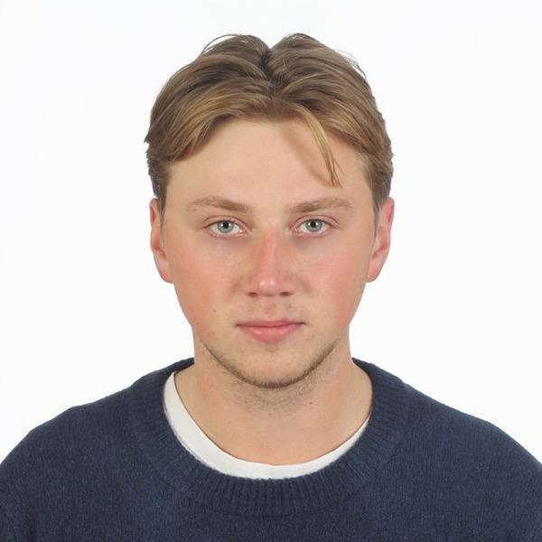

About Me
Jestem studentem Politechniki Lubelskiej, a ta strona została stworzona jako część projektu inżynierskiego na
temat: "Wykonanie strony internetowej do planowania wycieczek rowerowych". W ramach pracy zaprojektowałem
stronę internetową, stworzyłem jej strukturę, przeprowadziłem analizę grupy docelowej i testowanie. Strona
została zbudowana przy użyciu różnych skryptów, własnego projektu graficznego oraz systemu generowania
artykułów.
Nazywam się Jarosław Domaretskyi, a rower i podróże to moje największe pasje. Od dziecka uwielbiałem jeździć na
rowerze, testując różne modele, ale najbardziej cenię sobie rowery szosowe. W 2022 roku postanowiłem połączyć moje
dwie pasje – rower i podróże. Razem z przyjacielem wybraliśmy się na pierwszą wycieczkę rowerową po Europie, która
była niezapomnianym doświadczeniem.
Na tej stronie znajdziesz artykuły mojego autorstwa oraz galerię zdjęć, z których wszystkie są moimi autorskimi pracami.
Na tej stronie znajdziesz artykuły mojego autorstwa oraz galerię zdjęć, z których wszystkie są moimi autorskimi pracami.
Moj rower